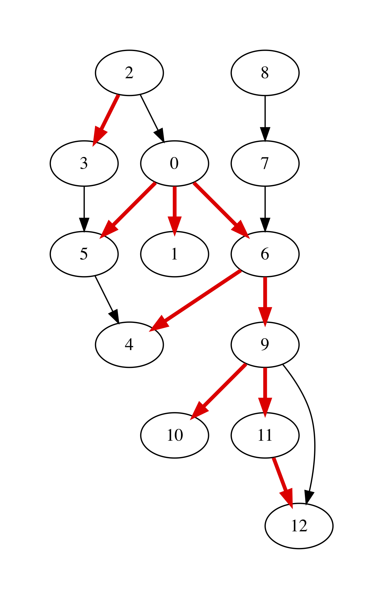
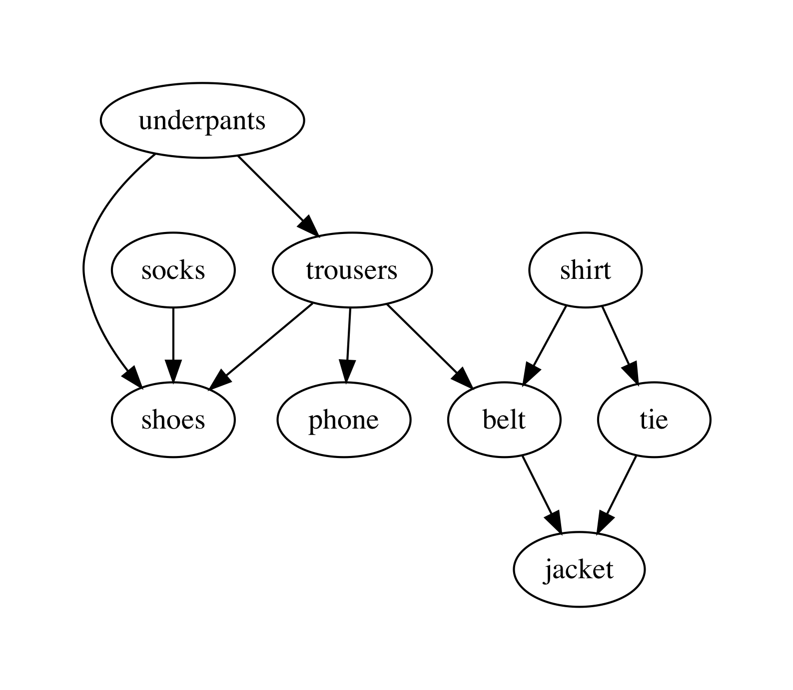

Reachability and Graph Traversals¶
- File:
Reachability.ml
Having the graphs defined, let us now do something interesting with them. In this chapter, we will be looking at the questions of reachability between nodes, as allowed by a given graph’s topology. In all algorithms, we will be relying on the linked representation:
open Util
open ReadingFiles
include Graphs
open LinkedGraphs
Checking Reachability in a Graph¶
Given a graph g and two its nodes init and final, let us
define a procedure that determines whether we can get from init to
final by following the edges of g, and if so, return the list
of those edges:
let reachable g init final =
let rec walk path visited n =
if n = final
then Some path
else if List.mem n visited
then None
else
(* Try successors *)
let node = get_node g n in
let successors = get_next node in
let visited' = n :: visited in
let rec iter = function
| [] -> None
| h :: t ->
let path' = (n, h) :: path in
match walk path' visited' h with
| Some p -> Some p
| None -> iter t
in
iter successors
in
match walk [] [] init with
| Some p -> Some (List.rev p)
| _ -> None
The implementation of reachable employs the backtracking technique
(see the Chapter Constraint Solving via Backtracking), which is implemented by
means of an interplay of the two functions: walk and iter. The
former also checks that we do not hit a cycle in a graph, hence it
contains the list of visited nodes. Finally, the path
accumulates the edges (in a reversed) on the way to destination, and
is returned at the end, if the path is found.
Question: What is the complexity of reachable in terms of sizes of g.V and g.E. What would it be if we don’t take the complexity of List.mem n visited into the account?
We can define the reachability predicate as follows:
let is_reachable g init final =
reachable g init final <> None
Testing Reachability¶
The following are the tests for the specific two graphs we have seen, designed with a human intuition in mind:
open Reachability
let%test _ =
let g = LinkedGraphs.parse_linked_int_graph small_graph_shape in
(* True statements *)
assert (is_reachable g 0 5);
assert (is_reachable g 5 1);
assert (is_reachable g 5 5);
(* False statements *)
assert (not (is_reachable g 4 5));
true
let%test _ =
let g = LinkedGraphs.parse_linked_int_graph medium_graph_shape in
(* True statements *)
assert (is_reachable g 2 4);
assert (is_reachable g 8 12);
assert (is_reachable g 0 10);
(* False statements *)
assert (not (is_reachable g 5 9));
assert (not (is_reachable g 11 7));
true
Rendering Paths in a Graph¶
We can use the same machinery for interactive with GraphViz to highlight the reachable paths in a graph:
let bold_edge = "[color=red,penwidth=3.0]"
let graphviz_with_path g init final out =
let r = reachable g init final in
let attrib (s, d) = match r with
| None -> ""
| Some p ->
if List.mem (s, d) p
then bold_edge
else ""
in
let ag = LinkedGraphs.to_adjacency_graph g in
let s = graphviz_string_of_graph "digraph" " -> "
string_of_int attrib ag in
write_string_to_file out s
For instance, taking the g to be the medium-size graph from the
end of the previous chapter, we can render the result of
graphviz_with_path g 2 12 "filename.out" to the following picture:
{kind=link}
Depth-First Traversal¶
It is possible to split graph into a set of trees with dedicated roots, so that each subtree is reachable from its root. One way to do it is using the Depth-First Search (DFS) procedure.
The procedure is similar to reachability checking implemented above, but employs a more efficient way to detect cycles via the “colouring” technique. In essence, it maintains an additional hash table, assigning the colors as attributes to the nodes, to indicate whether the have not yet, are inte processed, or have been fully processed:
open NodeTable
type color = White | Gray | Black
The main procedure is again implemented via back-tracking:
let rec dfs g =
let color_map = mk_new_table (v_size g) in
let tree_map = mk_new_table (v_size g) in
let time_map = mk_new_table (v_size g) in
let has_cycles = ref false in
let roots = ref [] in
let all_nodes = get_nodes g in
(* Make all nodes white *)
List.iter (fun n -> insert color_map n White) all_nodes;
(* Insert all nodes to the tree *)
List.iter (fun n -> insert tree_map n []) all_nodes;
let time = ref 0 in
let rec dfs_visit u =
time := !time + 1;
let u_in = !time in
insert color_map u Gray;
get_succ g u |> List.iter (fun v ->
let v_color = get_exn @@ get color_map v in
if v_color = White
then begin
let siblings = get_exn @@ get tree_map u in
insert tree_map u (v :: siblings);
dfs_visit v
end
else if v_color = Gray
then has_cycles := true) ;
insert color_map u Black;
time := !time + 1;
let u_out = !time in
insert time_map u (u_in, u_out)
in
List.iter (fun n ->
if get_exn @@ get color_map n = White
then begin
(* Record roots *)
roots := n :: !roots;
dfs_visit n
end)
all_nodes;
(!roots, tree_map, time_map, !has_cycles)
It starts by assigning all nodes the White colour, and then
creates an empty tree for each node. It also keeps track of time
(a natural number) of “entering” and “exiting” the node. The “roots”
of the trees are all collected in the mutable list roots, and the
variable has_cycles determines whether a cycle has been witnessed.
As the result, the procedure returns the list of roots, the hash-map that stores the tree relation between nodes in the DFS traversal from the roots, the pair of timestamps when a node has been visited and the boolean value indicating whether a graph has cycles.
Question: How would you characterise the period during which a node is painted Gray during the DFS traversal?
Question: If u is a parent of v in a DFS-tree, what is the
relation between their timestamps?
We can render the result of DFS via the following procedure, using the tree to retrieve the edge attributes:
(* Visualise with DFS *)
let graphviz_with_dfs g out =
let (_, tree, _, _) = dfs g in
let eattrib (s, d) = match get tree s with
| None -> ""
| Some p ->
if List.mem d p
then bold_edge
else ""
in
let ag = LinkedGraphs.to_adjacency_graph g in
let s = graphviz_string_of_graph "digraph" " -> "
string_of_int eattrib ag in
write_string_to_file out s
For instance, for our working graph we get the following image, indicating two trees, rooted at nodes 0 and 2, correspondingly:
{kind=link}
DFS and Reachability¶
Let us define the following procedure, checking the reachability via DFS:
let is_reachable_via_dfs g init final =
let (roots, tree, _, _) = dfs g in
let rec walk n =
if n = final then true
else
get tree n |>
get_exn |>
List.exists (fun v -> walk v)
in
if List.mem init roots
then walk init
else false
Question: Is initial notion of reachability equivalent to DFS-reachability?
The differences aside, we can still use it to teste DFS using the following observations:
let test_dfs g =
let all_nodes = LinkedGraphs.get_nodes g in
let (dfs_roots, _, _, _) = GraphDFS.dfs g in
(* Any node DFS-reachable from a root r is reachable from r *)
let fact1 =
List.for_all (fun u ->
List.for_all (fun v ->
if GraphDFS.is_reachable_via_dfs g u v
then is_reachable g u v
else true) all_nodes) dfs_roots
in
(* Any node is reachable from some root r *)
let fact2 =
List.for_all (fun u ->
List.exists
(fun r -> GraphDFS.is_reachable_via_dfs g r u)
dfs_roots)
all_nodes in
fact1 && fact2
DFS and Cycle Detection¶
As a byproduct, our DFS has detected if a given graph has a cycle in it. We can now test it as follows:
let%test _ =
let g = LinkedGraphs.parse_linked_int_graph small_graph_shape in
let (_, _, _, c) = GraphDFS.dfs g in
c
let%test _ =
let g = LinkedGraphs.parse_linked_int_graph medium_graph_shape in
let (_, _, _, c) = GraphDFS.dfs g in
not c
Topological Sort¶
Assume our graph has no cycles (i.e., it is a so-called Directed Acyclic Graph, or DAG). In this case it is possible to enumerate its nodes (i.e., put them to an ordered list) in a way that all edges will be going from nodes “left-to-right”. This operation is called Topological Sort and is very useful for processing dependencies in an order, implicitly imposed by a graph.
As an example of Topological Sort, you can think of compiling multiple OCaml files. Dependencies between files introduce a DAG (as there are no cycles), but the compiler need to process them in an order so that the dependant files would be compiled after their dependencies. This is where Topological Sort comes to the rescue.
Another (somewhat more lively) example is a professor who dresses every morning, having the following dependencies between his clothes to put on:
{kind=link}
The graph with those dependencies can be encoded as follows:
let clothes_edges = [
(0, 8);
(0, 2);
(8, 2);
(8, 1);
(8, 7);
(3, 7);
(3, 4);
(4, 5);
(7, 5);
(6, 2);
]
while the payloads (i.e., the items of clothes) are given by the following array:
let clothes =
[|
"underpants";
"phone";
"shoes";
"shirt";
"tie";
"jacket";
"socks";
"belt";
"trousers";
|]
We can now instantiate the linked-structure-based graph via the following function:
let read_graph_and_payloads size nvalue elist elabels =
let open AdjacencyGraphs in
let g = mk_graph size in
for i = 0 to g.size - 1 do
set_payload g i nvalue.(i)
done;
List.iter (fun (s, d) -> add_edge g s d) elist;
List.iter (fun (s, d, l) -> set_edge_label g s d l) elabels;
LinkedGraphs.from_simple_adjacency_graph g
let clothes_graph =
read_graph_and_payloads 9 clothes clothes_edges
([] : (int * int * unit) list)
The image can produced by the following procedure:
let graphviz_with_payload g values out =
let eattrib e = "" in
let vattrib n = values.(n) in
let ag = LinkedGraphs.to_adjacency_graph g in
let s = graphviz_string_of_graph "digraph" " -> "
vattrib eattrib ag in
write_string_to_file out s
The procedure of the topological sort exploits the time-stamps recorded during DFS. The intuition is as follows: in the absence of cycles, the nodes with the later “exit” timestamp u_out are the “topological predecessors” of those with smaller timestamps, and, hence, the former should be put earlier in the list. Another way to think of it is that DFS introduces a “parenthesised structure” on the subtrees of the graph, and the nodes up the tree have exit timestamps, corresponding to a parenthesis more “to the right”.
The implementation of the topological sort, thus, simply sorts the nodes in the decreasing order of the exit timestamp:
module TopologicalSort = struct
open NodeTable
let get_last_time m n = get_exn @@ get m n
let topo_sort g =
let (_, _, time_map, _) = GraphDFS.dfs g in
get_nodes g |>
List.sort (fun n1 n2 ->
let (_, t1) = get_last_time time_map n1 in
let (_, t2) = get_last_time time_map n2 in
if t1 < t2 then 1
else if t1 > t2 then -1
else 0)
end
For the graph of professor clothes, the topological sort returns the following sequence (which is coherent with the picture above):
utop # let l = TopologicalSort.topo_sort clothes_graph;;
utop # List.iter (fun i -> Printf.printf "%s\n" clothes.(i)) l;;
socks
shirt
tie
underpants
trousers
belt
jacket
phone
shoes
Testing Topological Sort¶
A simple property to check of a topological sort is that for all subsequently positioned nodes (u, v) in its result, the node u is not reachable from v:
let rec all_pairs ls = match ls with
| [] -> []
| _ :: [] -> []
| h1 :: h2 :: t -> (h1, h2) :: (all_pairs (h2 :: t))
let%test _ =
let g = LinkedGraphs.parse_linked_int_graph medium_graph_shape in
let pairs = TopologicalSort.topo_sort g |> all_pairs in
List.for_all (fun (s, d) -> not (is_reachable g d s)) pairs
let%test _ =
let g = clothes_graph in
let pairs = TopologicalSort.topo_sort g |> all_pairs in
List.for_all (fun (s, d) -> not (is_reachable g d s)) pairs